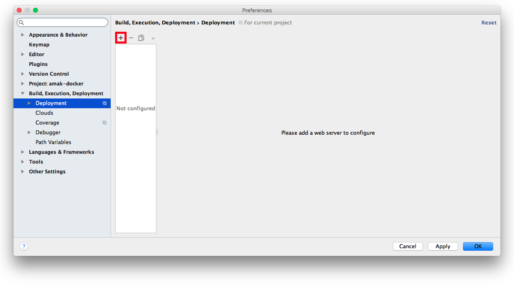
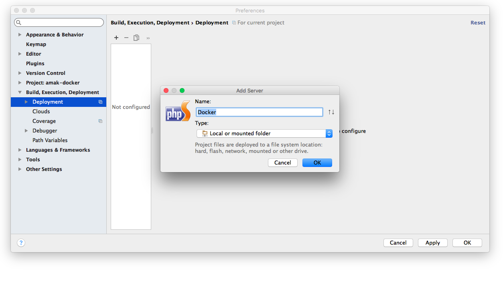
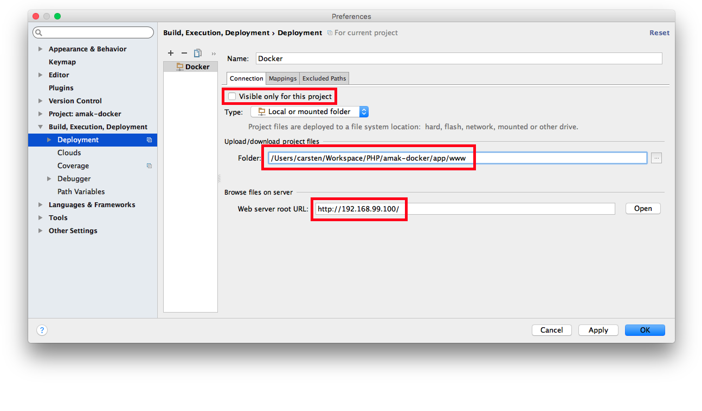
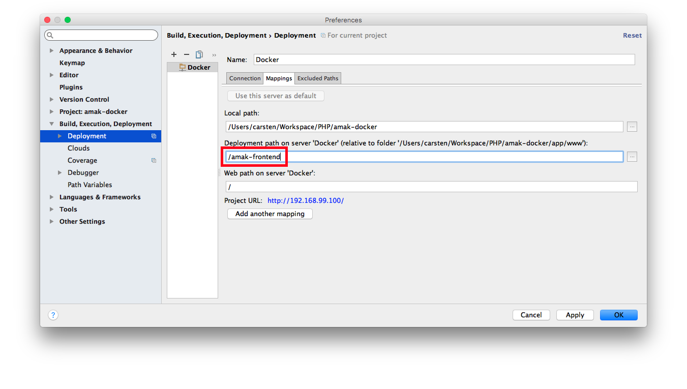
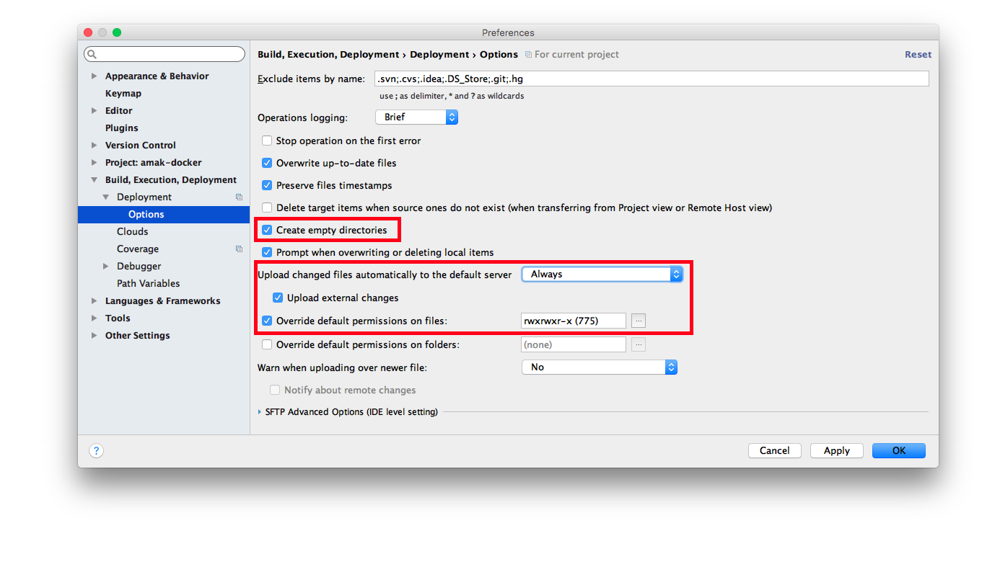

Hoo-ray! Fancy AMAK Docker Stuff!
Your Docker Environment is up and running. To start developing right in this container, you could copy the project files to the mounted directory by hand. File by file. Everytime you changed the code.
Or you could simply automate the deployment with PhpStorm, which is by far more comfortable. No idea what I'm talkin' 'bout? Just read on.
Deployment Setup
Checkout amak-frontend, open the project in PhpStorm and follow the steps to properly set up your IDE.
AMAK-FRONTEND
1. Open the Settings
Open the Deployment page inside the Build, execution, Deployment menu and click on the highlighted button as shown in the picture below. 
2. Add the Deployment Method
A window will show up, where you're supposed to name this deployment method and choose a type. Simply name it Docker and select Local or mounted folder. 
Enable this deployment for every project, by unmarking the checkbox at the top of the first tab.
Locate and select the app/www directory of the AMAK Docker Environment and type in the IP
of your Container.

3. Map your Project Path
Just type in /amak-frontend and everything will be fine.

4. Pay Attention to the Details
Expand the Deployment menu item and open the Options page. Mark the shown checkbox and let
PhpStorm automatically upload your Changes by either selecting On explicit save action or Always
in that dropdown. Also mark the checkbox below, so that external changes, e.g. libraries installed via
composer install or that grunt gibberish, are deployed as well. Override the default file
permission with 775.


AMAK-SOURCE
Checkout amak-source and again open your IDE settings inside that project.
1. Map your Project Path
Select the Mappings tab and type in /amak-source almost just like you did in step 3 before.
2. It's all about the Details
Repeat step 4 from the automatic deployment instruction for amak-frontend.
Deployment
While you're working on source code, PhpStorm now should do the deployment. But initially you should deploy it
manually. In both of the AMAK projects, right click on the projects root directory and click on Upload to
Docker.

That's it!
If you encounter any weird problems during this instruction, blame it on the author of this document or try to figure out what's wrong on your own.
You can also find this document within the app/default directory of the AMAK Docker Environment.